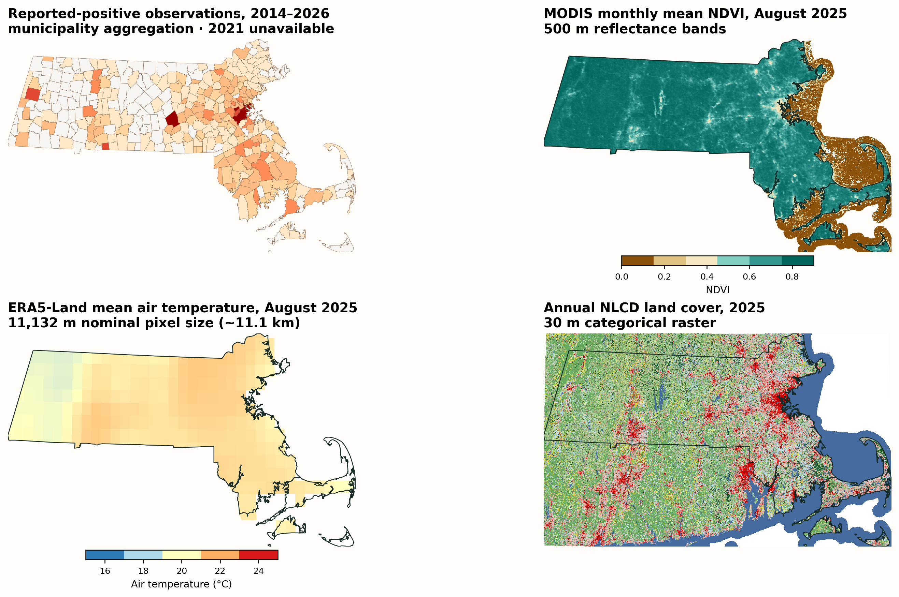
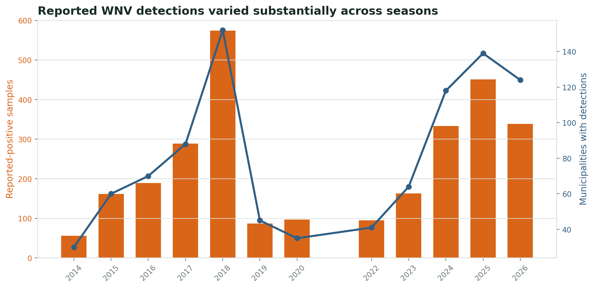
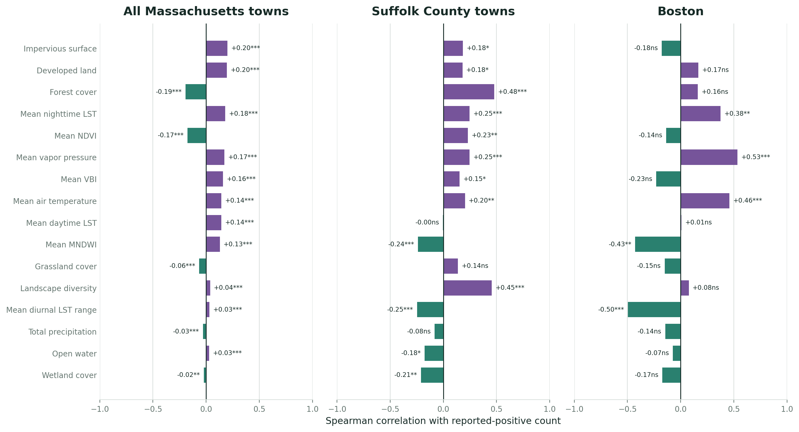
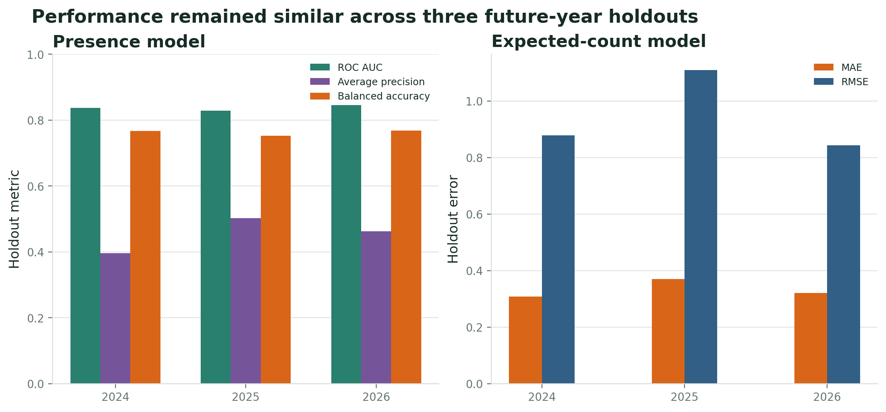
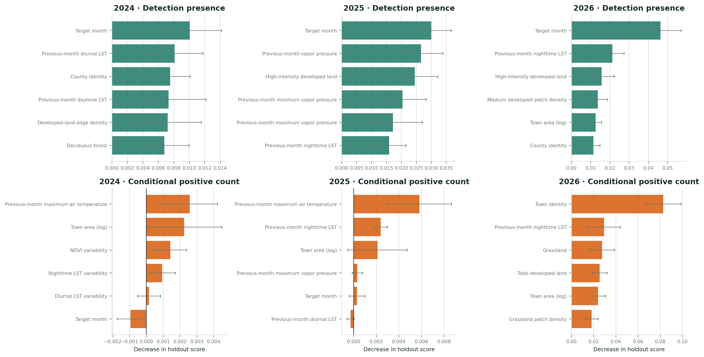
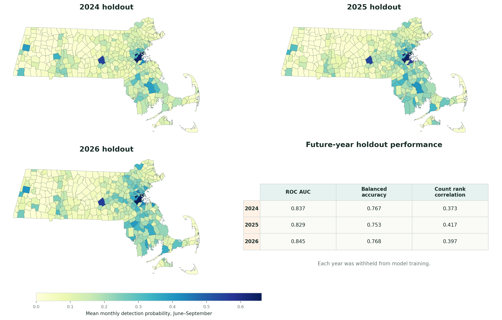
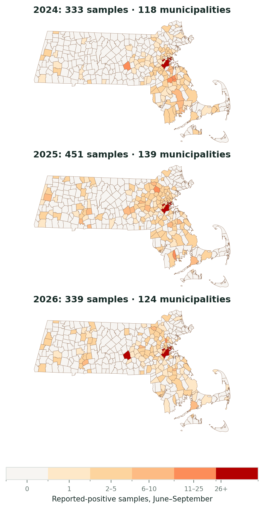

Environmental relationships and Random Forest modeling of West Nile virus surveillance in Massachusetts
2026-12-08
Outcome: reported-positive mosquito samples from Massachusetts arbovirus surveillance (Massachusetts Department of Public Health 2026).

Same Massachusetts State Plane extent in every panel. Sources: Massachusetts surveillance; MODIS MOD09GA (Vermote and Wolfe 2021); ERA5-Land (Muñoz-Sabater et al. 2021); Annual NLCD Collection 1.2 (U.S. Geological Survey 2026).

In 2026, surveillance recorded 339 reported-positive samples in 124 municipalities during June–September.

Correlations become more diluted as municipalities with different environments and surveillance patterns are pooled together.
Random Forest classifier estimates the probability of at least one reported-positive sample.
Random Forest regressor estimates the count conditional on a reported detection.
\[E(Y)=P(Y>0)\times E(Y\mid Y>0)\]
Predictors include previous-month environment, prior-year landscape, target month, municipality area, and geographic identity. Random Forests accommodate nonlinearities and interactions (Breiman 2001).

| Holdout | ROC AUC | Average precision | Balanced accuracy | Count MAE | Count RMSE |
|---|---|---|---|---|---|
| 2024 | 0.837 | 0.396 | 0.767 | 0.308 | 0.879 |
| 2025 | 0.829 | 0.503 | 0.753 | 0.369 | 1.110 |
| 2026 | 0.845 | 0.462 | 0.768 | 0.321 | 0.844 |

Permutation importance measures loss of holdout performance after shuffling a predictor. It does not indicate effect direction or causality.


All future-year holdouts identify higher reported-detection suitability in parts of eastern Massachusetts.
Town and county identity can reveal persistent geographic patterning, but they do not directly measure trap placement, testing volume, or sampling frequency.
The dashboard is best used to explore reported detections, compare environmental context, and prioritize surveillance review.
Dashboard: https://vanchy-li.github.io/works/wnv-dashboard.html
Massachusetts WNV municipal surveillance | Reported-positive mosquito samples